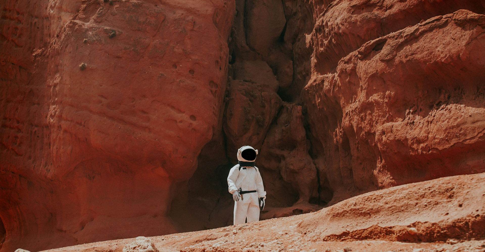

본문 바로가기
대메뉴 바로가기
한국천문연구원
메뉴열기
연구원소개
인사말
기관개요
우주를 밝혀온 40년
조직 및 업무안내
안전보건경영
윤리경영
대외협력
UST천문캠퍼스연구시설
CI
오시는길
연구분야
광학천문
전파천문
우주과학
우주위험감시
이론천문
천문우주기술
연구성과
논문
특허
기술보고서
천문우주기술
기술이전상담
중소기업지원
연구장비공동활용
학술정보
콜로퀴움
워크숍/세미나
저널클럽
방문연구자
IAU100
정책정보
과학문화
교원천문연수
천체사진공모전
천체관측축제
외계행성이름짓기
고객참여
알림사항
보도자료
포토갤러리
동영상
발행물
인재채용
민원/건의/신고
정보공개
정보공개
청렴정보공개
내 ·외부감사결과
사업실명제
메뉴닫기
검색

history
research
contest
news